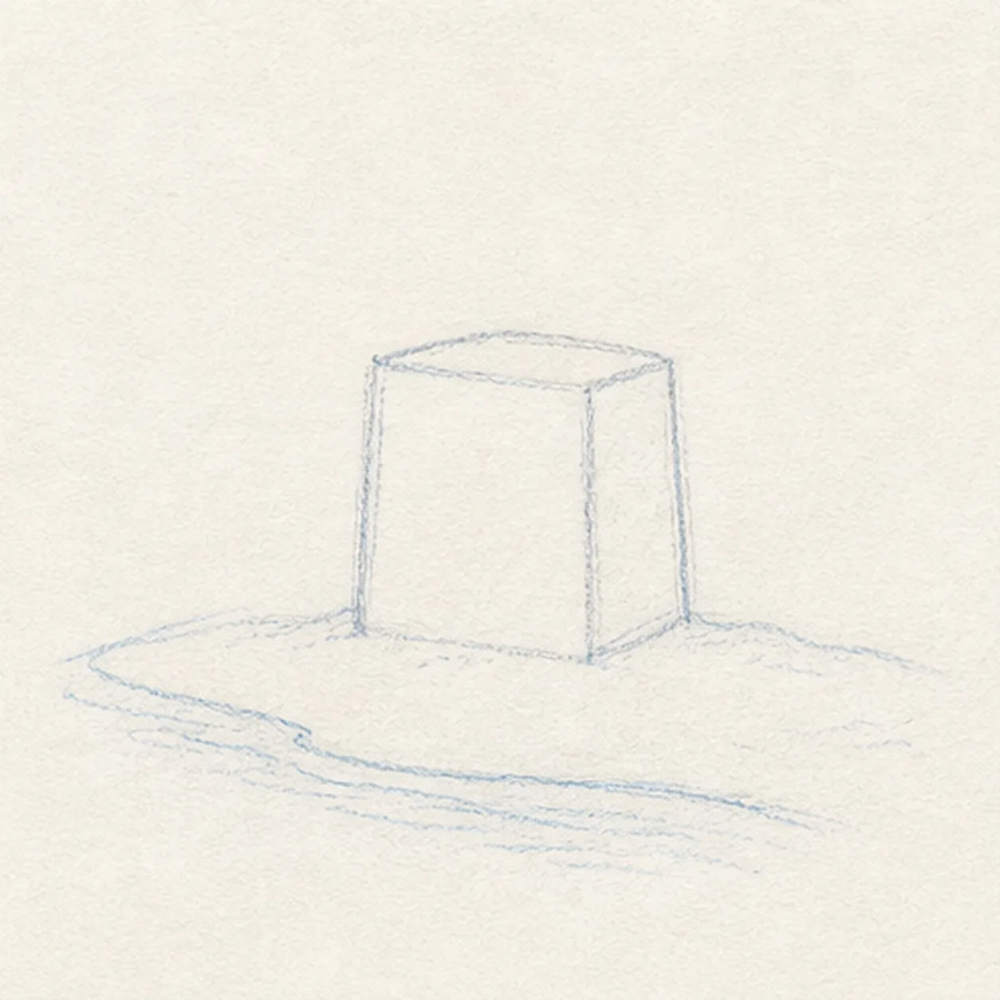
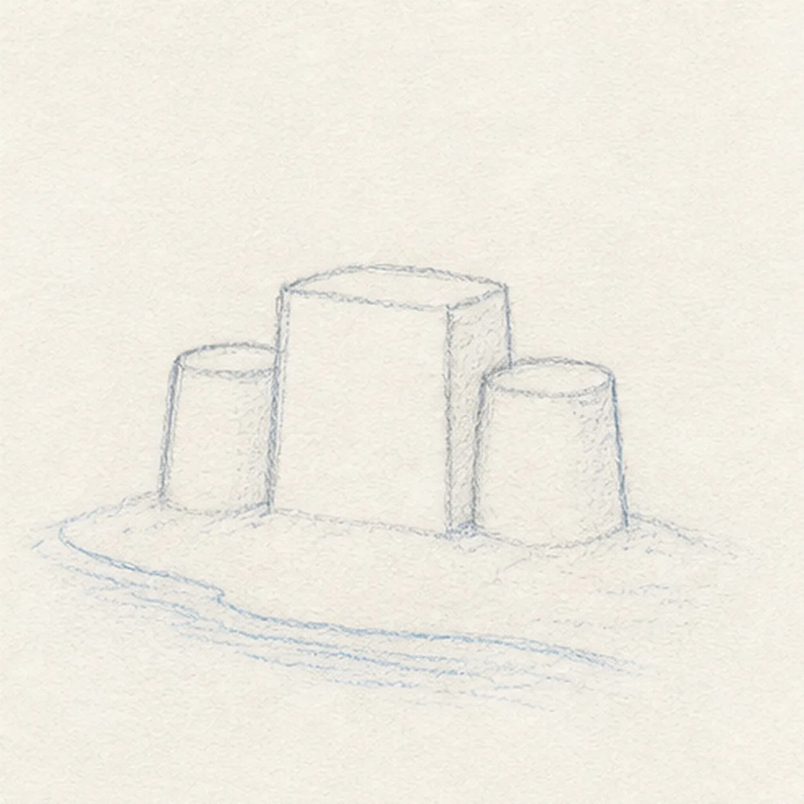
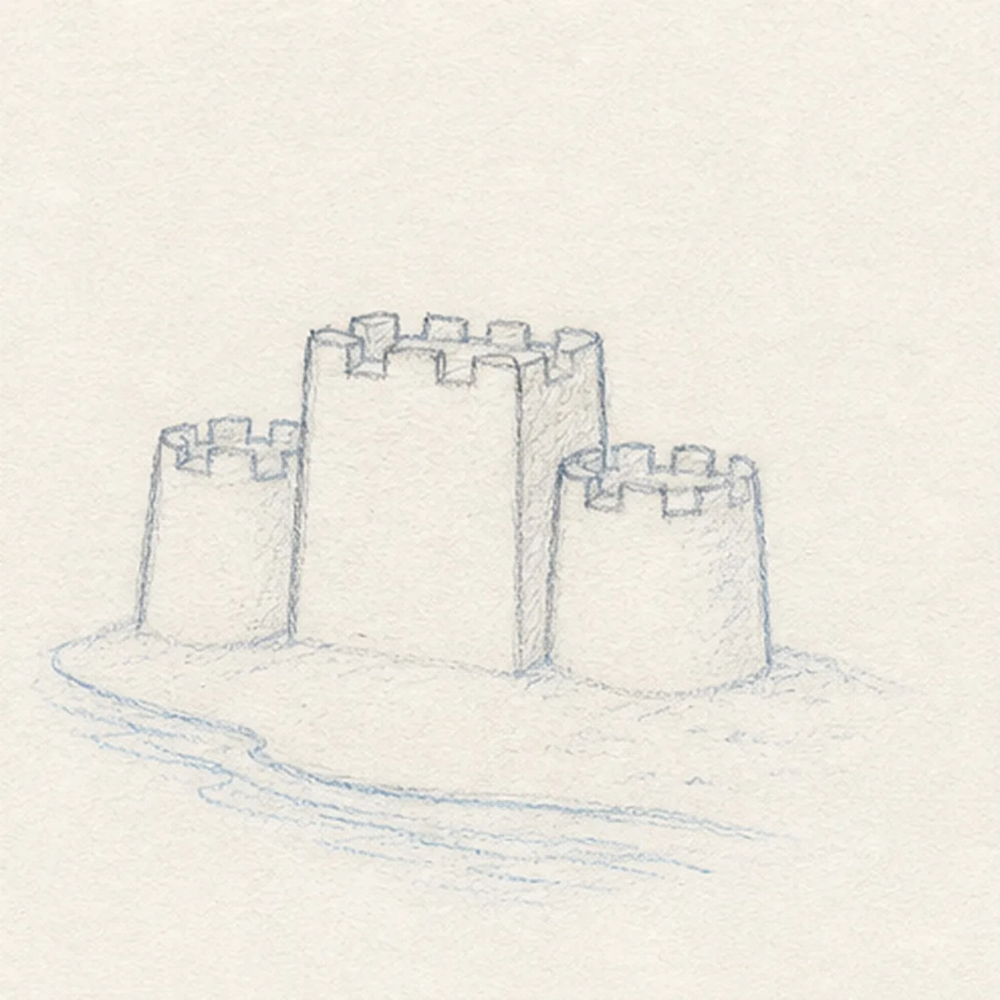
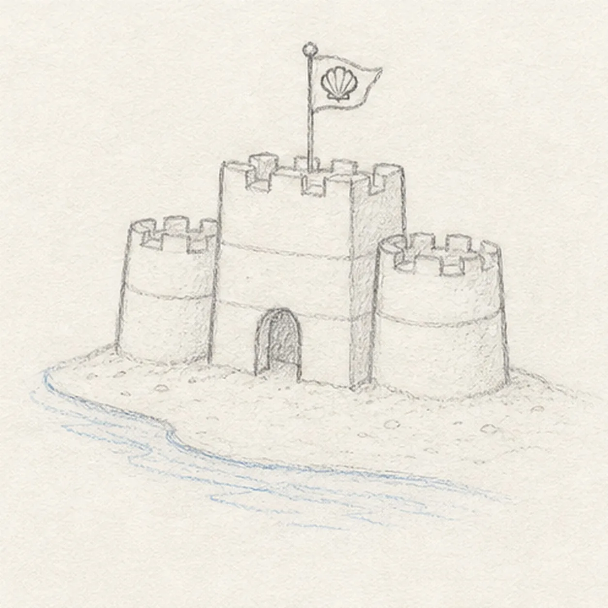
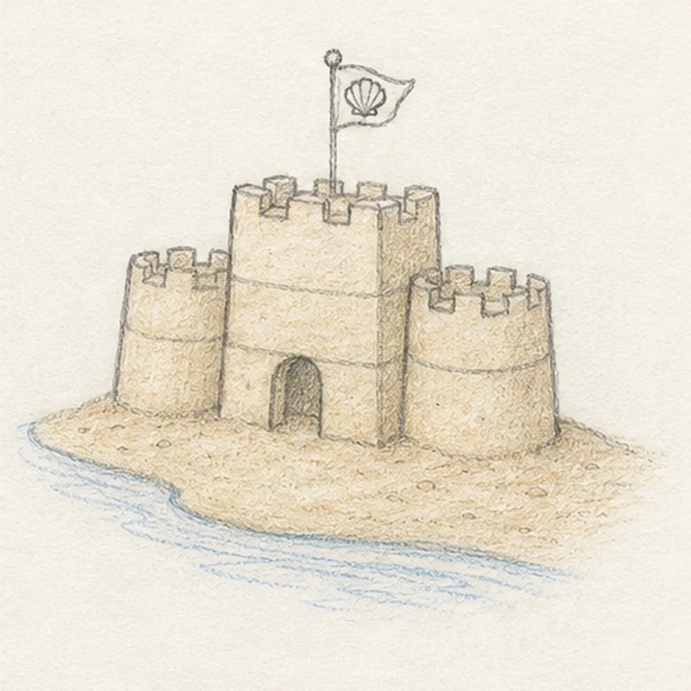

From the archive
Let's draw a sandcastle by the shore
Treat this as one small practice round: build the subject lightly, notice the shapes, then darken only the lines that help the finished sketch.
-
01

Place the shore and tower
Draw a shallow curved shoreline, then place a light boxy central tower just above it.
Sketch tip: Ghost the shoreline in one long sweep before committing. A gentle curve keeps the beach from feeling like a flat shelf.
-
02

Round the side turrets
Add one rounded turret on each side of the central tower, keeping their tops a little lower than the middle tower.
Sketch tip: Compare the empty spaces between the towers. Similar gaps make the castle feel built from one simple plan.
-
03

Notch the castle tops
Cut small square crenellations into the top edges of all three towers.
Sketch tip: Rotate the page if the little squares get stiff. Short, controlled strokes are easier when your wrist can pull downward.
-
04

Add the tiny details
Draw the arched doorway, a few horizontal sand-block seams, a small shell flag, and scattered sand marks.
Sketch tip: Keep the seams lighter than the outside contour. Those quiet interior lines suggest sand blocks without making the towers look like brick walls.
-
05

Shade the sand and water
Add pale ochre tone across the existing sandcastle and beach, then touch in a few pale blue shoreline strokes.
Sketch tip: Shade in the direction of each surface. Vertical strokes on the towers and horizontal strokes along the shore make the forms easier to read.
-
06

Settle the beach sketch
Darken the keeper contours, clarify the existing crenellations, doorway, shell flag, sand texture, and pale color accents.
Sketch tip: Stop before adding a giant sun, people, or extra beach gear. The little castle and water edge already tell the whole story.